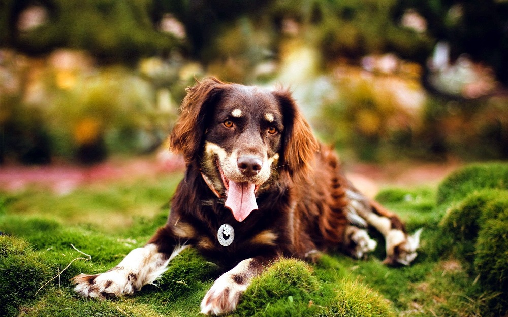
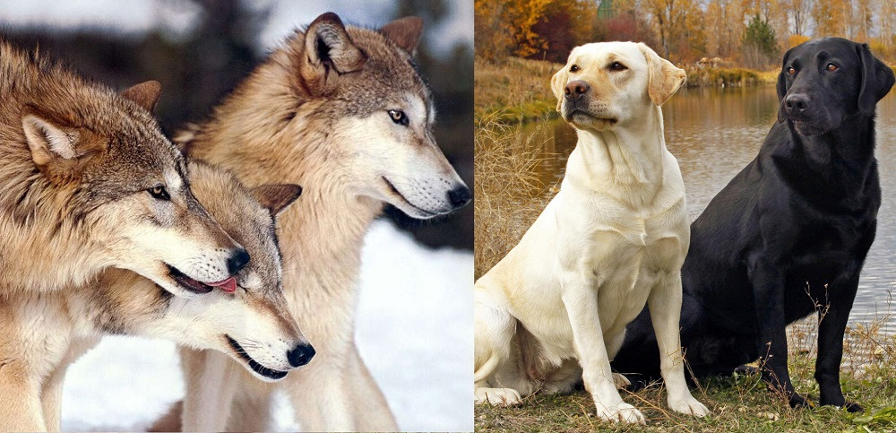
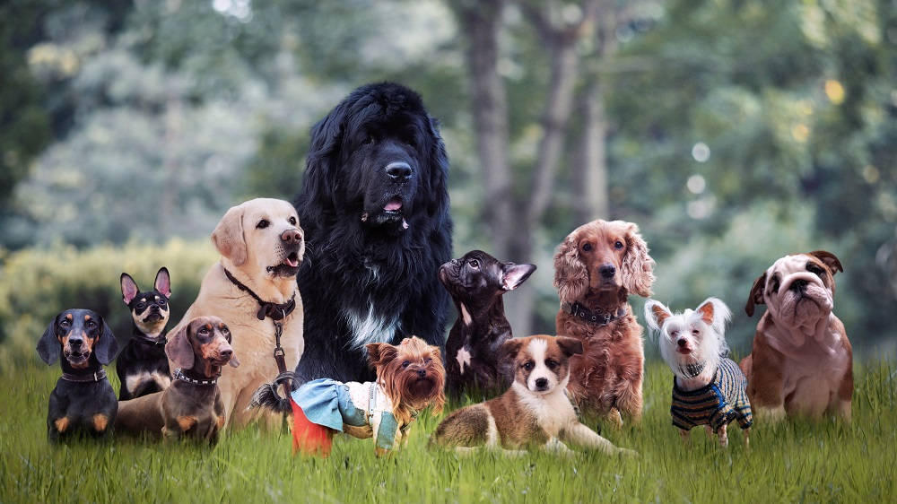
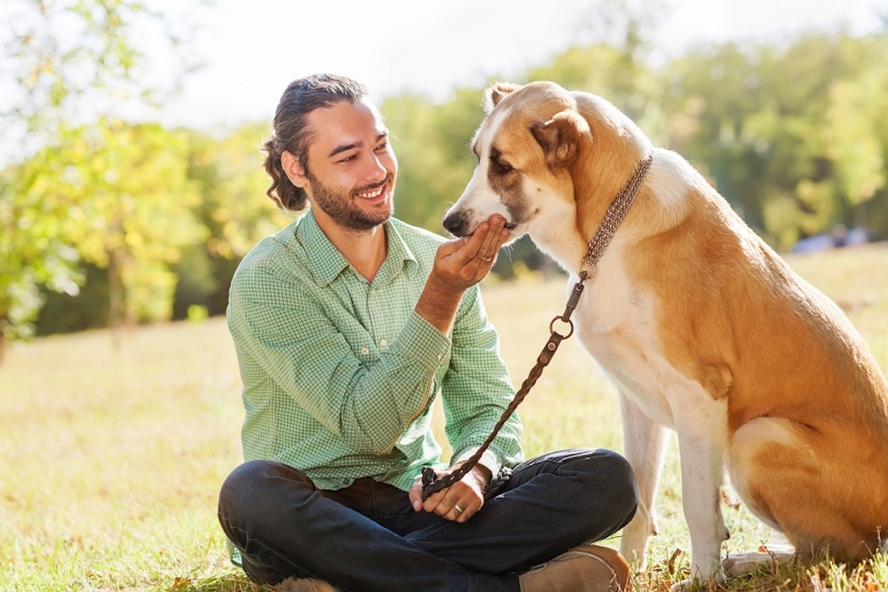

Собака. Описание вида
СОБАКА (Canis familiaris), одомашненное млекопитающее семейства псовых (Canidae) отряда хищных, одно из самых популярных домашних животных. Вероятно, человек приручил собаку не менее 14 000 лет назад. Именно такой возраст был определен для ископаемых зубов и челюсти домашней собаки, найденных в одной из пещер в Ираке. На ее стенах и в других местах обнаружены рисунки, запечатлевшие собак, напоминающих некоторые современные породы; кроме того, похожие изображения собак, обычно охотничьих, встречаются на примитивной глиняной посуде. Известно, что древние греки разводили несколько типов их пород, различавшихся главным образом по врожденному поведению (пастушьи, сторожевые и охотничьи). Египтяне 9000 лет назад тоже держали несколько их типов, а 4000 лет назад использовали огромных собак, напоминающих мастифов, в сражениях.
Предок собаки – волк; различия между ним и некоторыми породами столь малы, что этих животных легко спутать. Близкое родство отражено в научной классификации: речь идет о двух видах одного рода (C. familiaris и C. lupus). В результате длинной череды мутаций волк дал начало всем породам собак, разнообразие которых поистине поразительно. Неизвестно, когда произошли первые мутации, привлекшие внимание человека, но случилось это очень давно. Вероятно, волки держались поблизости от древних людей и подкармливались остатками их охотничьих трофеев. Вместе с тем, возможно, и человек пользовался тушами копытных, убитых волками, до того как хищники успевали их полностью съесть. Согласно собранным данным и гипотезам, люди и волки издревле хорошо уживались и в той или иной степени зависели друг от друга.
Хотя и неизвестно, когда домашние собаки приобрели отличия от своих диких предков, ученые полагают, что к 3500 до н.э. в Европе уже существовало четыре их основных типа, давших начало большинству современных пород. Собака Иностранцева (C. familiaris inostranzewi) представляла собой крупного зверя, полученного в результате скрещивания ранних дингоподобных собак и северных волков. Возможно, она стала предком таких мощных пород, как немецкая овчарка, хаски и чау-чау. Бронзовая собака (C. f. matris-optimae) была примитивной овчаркой, от которой произошли, например, колли, а маленькая торфяная собака (C. f. palustris) дала начало терьерам и шпицам. Пепельная (зольная) собака (C. f. intermedius) – это, по-видимому, предок большинства гончих, за исключением грейхаундов, которые могли произойти прямо от исходных дингоподобных форм.
Тело собаки покрыто шерстью, которая чаще всего состоит из остевого, покровного волоса и пухового подшерстка. Длина и густота шерстного покрова зависит от породы и условий содержания. Окрас шерсти собак может быть самым разным, от природного рыже-серого цвета до всех вариантов белого, рыжего, черного, пятнистого. Имеются породы собак, лишенные шерстяного покрова, частично или полностью.
Собака обладает цветным зрением, острым обонянием, слухом, осязанием. Она прекрасно различает вкус пищи, поэтому будет рада различным лакомствам. Рацион собаки, как типичного представителя хищных животных, обязательно должен включать белковые продукты животного происхождения, а также быть сбалансированным по витаминам и минералам. В настоящее время имеется большой ассортимент готовых кормов для собак.
Беременность собаки длится от 58 до 62 дней. Одновременно на свет может появиться от одного до десяти и даже пятнадцати жизнеспособных щенков, которых мать вскармливает молоком. Подсосный период у собак длится до 8 недель, но примерно на 4 – 5 неделе щенки способны питаться самостоятельно.
Классификация
При составлении классификации животных Карл Линней выделил собаку в отдельный вид – Собака обыкновенная. По современной, принятой в 1993 году классификации, собака – это представитель вида Волк, подвида Собака. Она, как и волк, является представителем:
- класса млекопитающие;
- отряда хищные;
- семейства псовые;
- рода волки;
- вида волки;
- подвида собака.
Уход за собакой
Есть породы, которые можно содержать только в условиях помещения, есть – вольерного содержания. Уход за животным абсолютно несложен и заключается в кормлении, уходе за шерстью, своевременных ветеринарных мероприятиях и вакцинации. Также у щенков необходимо сформировать правильное поведение, приучив малышей к выгулу. Конечно, каждая отдельная порода таит в себе свои нюансы по ухаживанию.
